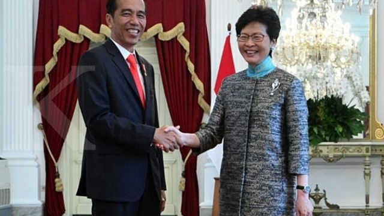
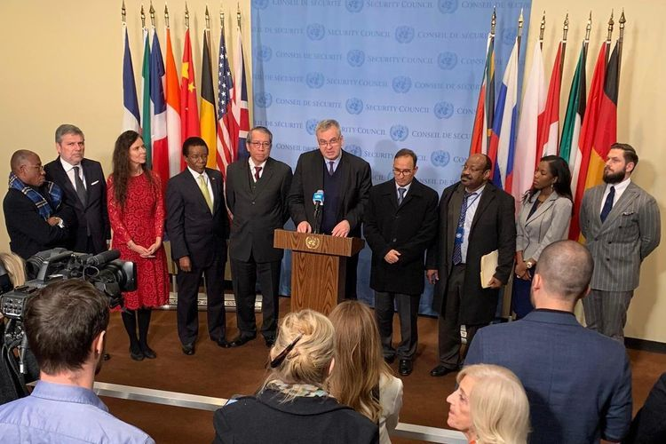
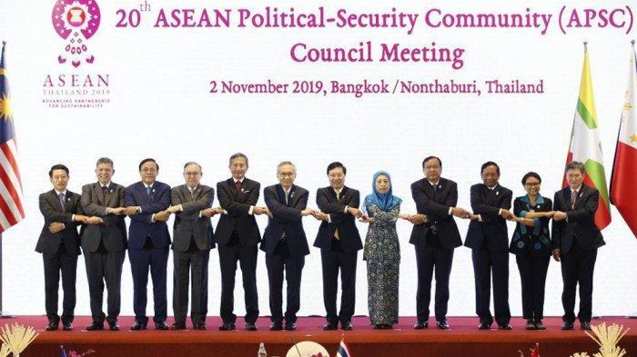

.png)
Tentang Kerjasama
Kerjasama Bilateral
Kerjasama bilateral adalah hubungan antara dua negara untuk mencapai tujuan tertentu. Saat ini Indonesia telah menjalin kerjasama bilateral dengan 162 negara di dunia dalam berbagai bidangnya. Contohnya adalah kerjasama antara negara Indonesia dengan Australia dalam bidang pendidikan.
Kerjasama Multilateral
Kerjasama multilateral adalah kerjasama antara negara-negara tanpa memandang wilayah untuk tujuan tertentu. Contohnya adalah WHO, WTO. Kerja sama multilateral biasanya hanya mengatur hal-hal yang menyangkut kepentingan umum dan bersifat terbuka.
Kerjasama Regional
Ada juga kerjasama regional yang berarti kerjasama antar dua negar atau lebih di satu wilayah untuk mencapai suatu tujuan masing-masing negara. Contohnya ASEAN. Dengan adanya kerjasama antarnegara, akhirnya semua negara berdiskusi dan bekerjasama untuk menyejahterakan negara-negara di dunia dengan membuat SDGs.
Kerjasama Indonesia dan Hong Kong
Salah satu negara yang bekerja sama dengan Indonesia adalah Hong Kong. Indonesia dan Hong Kong bekerja sama dalam berbagai bidang. Kerjasama ini dapat menguntungkan satu sama lain hingga menjadi negara-negara yang lebih berkembang. Kerjasama bilateral antara Indonesia dengan Hong Kong ada di dalam berbagai bidang. Pertama dalam bidang perdagangan dan ekonomi seperti ekspor batu bara, perjanjian dagang ASEAN dengan Hong Kong, dan lainnya. Ada juga untuk tenaga kerja yaitu Perlindungan PMI (Pekerja Migran Indonesia) di perusahaan-perusahaan Hong Kong. Tidak hanya dalam pekerjaan dan ekonomi negara, tetapi juga dalam bidang pariwisata dimana Indonesia dan Hong Kong menguntungkan satu sama lain dalam mempromosikan pariwisata satu sama lain di negara masing-masing. Hal ini dapat meluaskan pengetahuan warga asing tentang negara Indonesia. Dengan begitu, dapat membantu dalam bidang kebudayaan juga. Tidak hanya dengan pariwisata, tetapi dalam universitas-unversitas Hong Kong dan Indonesia menjalin kerjasama dalam pertukaran pelajar. Konsulat Jenderal RI di Hong Kong juga mendirikan Pusat Bahasa Indonesia untuk mengajarkan bahasa dan budaya Indonesai kepada warga negara Hong Kong. Masih bayak lagi kerjasama di berbagai bidang.
Kerjasama dalam SDGs (Tujuan 4)
Sesuai dengan Tujuan 4 SDGs: Pendidikan Berkualitas, Hong Kong dan Indonesia melakukan beberapa kerjasama dalam mewujudkan tujuan itu. Hong Kong menyediakan dan memberikan beasiswa kepada mahasiswa-mahasiswa di Indonesia untuk melanjutkan studi dan memasuki universitas di Hong Kong seperti The University of Hong Kong (HKU) dan Hong Kong University of Science and Technology (HKUST). Ada jugap rogram pertukaran pelajar seperti kerjasama Hong Kong dengan Universitas Indonesia (UI) dn Universitas Gadjah Mada (UGM). Kesempatan ini tidak hanya memberikan siswa mendapatkan ilmu lebih banyak, tetapi juga mendapatkan pengalaman dan komunitas yang baru sehingga dapat menjalin komunikasi dan kerjasama secara internasional. Pelajar dari kedua negara dapat bertukar ilmu sehingga memperluas wawasan satu sama lain dan akhirnya mempererat hubungan internasional. Pemerintah Hong Kong bekerja sama dengan Konsulat Jenderal Republik Indonesia (KJRI) untuk menyediakan pelatihan bahasa bagi pekerja migran Indonesia (PMI) di Hong Kong untuk membantu meningkatkan keterampilan pekerja sehingga pekerja dapat belajar tanpa meninggalkan pekerjaannya. Program ini mendukung tujuan 4 dalam SDGs. Ada juga kerjasama dalam melakukan penelitian pendidikan. Universitas di Hong Kong dan Indonesia bekerja sama dan berkolaborasi dalam melakukan penelitian yang berfokus pada pendidikan menggunakan teknologi seperti pembelajaran berbasis teknologi untuk memajukan pendidikan hingga meningkatkan keterampilan siswa-siswa di daerah terpencil dan dapat mewujudkan tujuan 4 dalam SDGs. Kerjasama dalam pendidikan ini juga mencakup ilmu yang didapatkan siswa, dapat sesuai dengan perkembangan zaman yang ada. Seperti yang sudah disebutkan dalam kerjasama Indonesia dan Hong Kong dalam berbagai bidang, kerjasama dalam kebudayaan juga dapat mendukung pendidikan berkualitas. Dengan mengenalkan kebudayaan satu sama lain, pelajar-pelajar di masing-masing negara dapat memperluas pengetahuan internasional. Misalnya melalui program festival budaya, pentas seni budaya, pameran seni ataupun seminar. Kerjasama ini membuka peluang untuk menciptakan pendidikan yang lebih berkembang dan efektif. Jika dilakukan dalam jangka panjang,